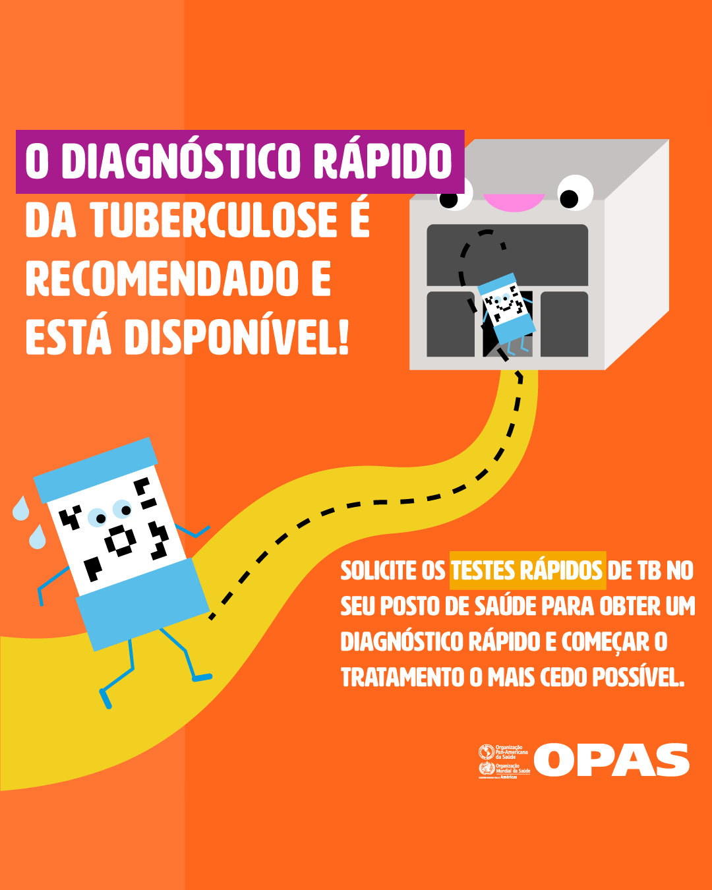
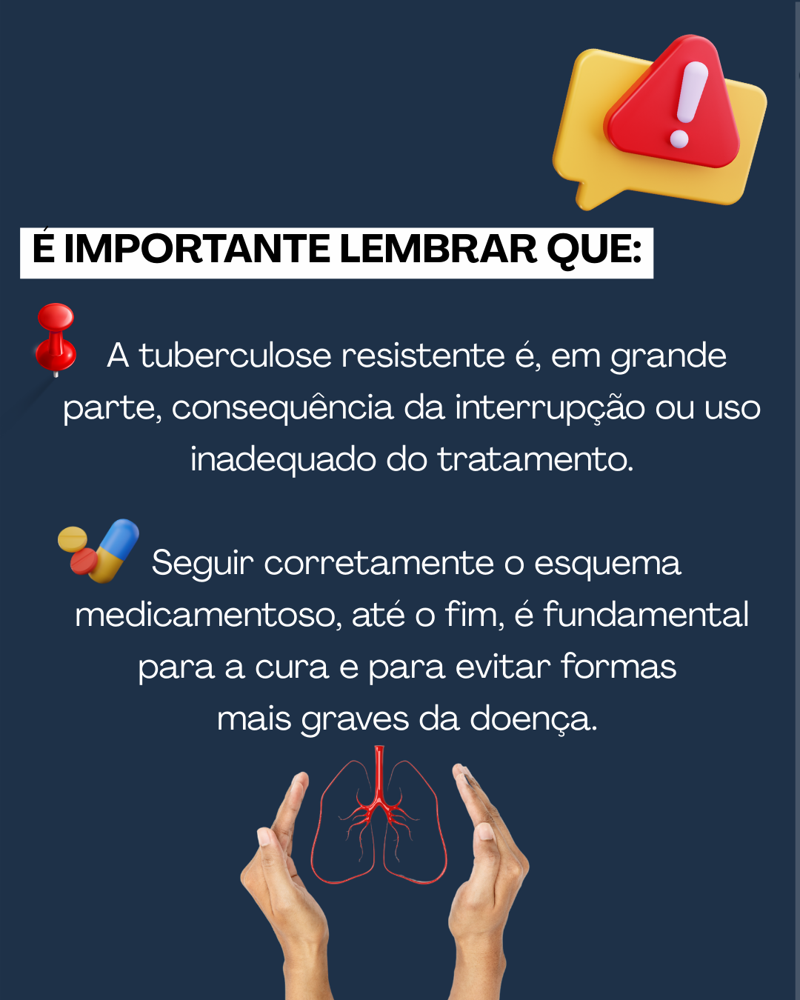

Série: Conhecendo mais sobre a tuberculose
“Você sabia?!…”
@REVIGET | @REVIGETBRASIL
Se você nos segue nas redes sociais por acompanhar as nossas publicações, compartilhar e ainda comentar. Organizamos tudo em apenas um lugar para que você acompanhe essa série chamada “Conhecendo mais sobre a tuberculose”.
VOCÊ SABE O QUE É TUBERCULOSE?
Data: 11-06-2024
A Tuberculose (TB) é causada pelo bacilo Mycobacterium tuberculosis e atinge milhares de pessoas ao ano. A sua transmissão ocorre principalmente de pessoa para pessoa, através da inalação do bacilo presente no ar exalado por indivÃduo infectado. Isso se dá por meio da fala, tosse ou espirro do indivÃduo com TB ativa.
Mesmo sendo uma doença curável, ainda há uma taxa de mortalidade significativa em todo o mundo, e é a doença foco de estudo do REVIGET.
E você? Já sabia o que era a tuberculose?
COMO É FEITO O DIAGNÓSTICO DA TB?
Data: 18-06-2024
O diagnóstico da TB é realizado por:
🔬Exame de Baciloscopia: um dos métodos mais importantes de diagnóstico e controle. Usa-se o escarro do paciente para contar a quantidade de bacilos encontrados.
🧫Exame de cultura: o padrão ouro que, associada ao teste de sensibilidade, permite identificar a tuberculose drogarresistente, permitindo que haja a multiplicação e o isolamento do bacilo.
🧪Teste rápido molecular: responsável por acelerar o diagnóstico. Utiliza técnicas de biologia molecular para identificar o DNA do Mycobacterium tuberculosis, permitindo seu diagnóstico, além de apresentar alta sensibilidade e especificidade a resistência à rifampicina.
🩻Radiografia do Tórax: um exame de imagem complementar em que se observa achados radiológicos, avaliando a extensão do acometimento e a evolução da enfermidade nos pacientes.
A prevenção é o melhor caminho para o fim da tuberculose. Em caso de sintomas procure a unidade de saúde mais próxima.
O TRATAMENTO DA TB💊
Data: 25-06-2024
Você sabia que a TB é uma doença curável?
O tratamento dura 6 meses e é eficaz se feito da maneira correta. Ele envolve uma combinação de antibióticos: isoniazida (H), rifampicina (R), pirazinamida (Z) e etambutol (E).
Tomar o medicamento da forma correta é importante para não criarmos resistência. Por isso, se estiver em tratamento, faça de acordo com o seu receituário e continue seu acompanhamento na unidade básica de saúde.
A TB RESISTENTE
Data: 26-08-2024
A TB é uma das doenças infecciosas mais antigas e persistentes do mundo. Mas quando ela desenvolve resistência aos medicamentos, os desafios se intensificam.
Neste espaço, abordamos tudo o que você precisa saber sobre a TB droga-resistente (TBDR): o que é, como ocorre a transmissão, diagnóstico, tratamento e prevenção.
Vamos juntos entender essa condição e descobrir como podemos combatê-la de maneira eficaz!🚨 Compartilhe e ajude a espalhar a conscientização!🙌
🧬 POR QUE NORTE E NORDESTE DO BRASIL?💛💚
Data: 25-01-2025
🔠O projeto REVIGET tem como objetivo de estudar a TB e contribuir com a propagação de informações para os serviços de controle e para a população das regiões Norte e Nordeste. Mas por que essas regiões?
🫠Vem compreender um pouco sobre o cenário dessas regiões para ter essa resposta!
🧬 VIGILÂNCIA GENÔMICA NO COMBATE À TBğŸ¦
Data: 31-01-2025
A vigilância genômica é uma ferramenta essencial no combate à tuberculose resistente, permitindo monitorar padrões de transmissão, detectar mutações associadas à resistência e otimizar estratégias de controle da doença.
Com o sequenciamento do genoma completo (WGS), identificamos perfis de resistência com mais precisão e rapidez, auxiliando na tomada de decisões clÃnicas e epidemiológicas. 💻📊
O projeto REVIGET fortalece essa vigilância ao capacitar laboratórios, padronizar protocolos e qualificar profissionais para análise e interpretação dos resultados! 🚀🔍


🧬AVANÇOS NO DIAGNÓSTICO DA TB🔬
Data: 08-02-2025
O WGS e o NGS estão revolucionando o diagnóstico da TB, eles transformaram a genética e a biologia molecular, oferecendo ferramentas poderosas para entender a base genética da doença e sua diversidade biológica.💻ğŸ¦
Com as tecnologias de WGS e NGS é possÃvel mapear todo o genoma, identificando variantes genéticas que possibilitam a personalização do tratamento, diagnóstico mais preciso e descoberta de novas terapias💊🧪
O projeto REVIGET possui como iniciativa o enfrentamento da TB utilizando as novas tecnologias de sequenciamento como o WGS🧑‍🔬.
:::
🦠🔬 BIOINFORMÀTICA NA LUTA CONTRA A TB! 💻✨
Data: 11-02-2025
Você sabia que a bioinformática é essencial para entender a TB e aprimorar o diagnóstico? Através da análise genômica, conseguimos detectar mutações, prever resistência a antibióticos e rastrear a transmissão da doença!
Neste post, vamos te mostrar como isso acontece e apresentar um pipeline bioinformático que torna esse processo mais eficiente 🚀👩‍💻. Além disso, o REVIGET capacita profissionais e oferece treinamentos em bioinformática para a interpretação de dados genômicos, fortalecendo a vigilância da TB no Brasil 🧬🔍.
📖 Quer saber mais? Confira esse estudo aplicado à vigilância genômica da TB no Pará.


DIA MUNTAL CONTRA A TB - ANO 2024
Data: 17-03-2025
Junte-se a nós neste mês para fortalecer a luta contra a TB! 🔬🫁
O Dia Mundial da TB, 24 de março, reforça a urgência de eliminar a doença infecciosa mais mortal do mundo 🌍🚨. A cada ano, milhões de pessoas são afetadas, mas juntos podemos mudar essa realidade!
Este ano, o tema da campanha global é “Yes! We Can End TB: Commit, Invest, Deliver†(Sim! Nós podemos acabar com a tuberculose: comprometer-se, investir, entregar) – um chamado à ação para que governos, profissionais de saúde e comunidades se comprometam, invistam e cumpram medidas concretas para eliminar a TB até 2030.
📌 A TB tem cura, mas o combate depende de todos nós! Faça sua parte: informe-se, compartilhe e apoie essa causa.
Fonte de conteúdo: @who @opspaho @stoptb

🫠A TB TEM CURA!
Data: 20-03-2025
A TB é uma doença séria, mas tem tratamento e cura! 💊✨
Fique atento aos sintomas, proteja-se e procure um profissional de saúde caso tenha contato com um paciente infectado ou pertença a um grupo de risco. Vamos juntos eliminar a TB! 🚀💙
📢 Faça sua parte: informe-se, compartilhe e apoie essa causa!
Fonte de conteúdo: @who @opspaho @stoptb
DEFINIÇÕES SOBRE A TB 💊🫁!
Data: 20-03-2024
A TB TEM TRATAMENTO 💊🫁!
Data: 21-03-2024
Os medicamentos utilizados no tratamento da TB são essenciais para erradicar a infecção e prevenir a resistência bacteriana, sendo fundamentais no combate à doença e na proteção da saúde pública.
O sucesso do tratamento depende da adesão completa às orientações médicas, garantindo assim a eliminação da TB!
Com o tratamento adequado, a tuberculose pode ser vencida, devolvendo a saúde e a esperança a quem a enfrenta 🫂
📢Faça sua parte, informe-se, compartilhe e apoie essa causa !
📌Fonte de conteúdo: @who @opspaho @stoptb
QUATRO FATOS - TB
Data: 22-03-2024
A TB ainda é um desafio global, mas temos as ferramentas para vencê-la! 🫁✨
Aqui estão 4 fatos essenciais sobre a TB:
✅ O tratamento é gratuito e eficaz quando seguido corretamente.
✅ O diagnóstico precoce é fundamental para interromper a transmissão.
✅ O tratamento para a tuberculose resistente agora é mais curto e totalmente oral.
✅ Juntos, podemos acabar com a TB!
A informação salva vidas. Vamos fortalecer essa luta! 💙
📌Fonte de conteúdo: @who @opspaho @stoptb

🫠CUIDAR É INFORMAR 📚
Data: 11-04-2024
A educação comunitária é essencial no combate à TB, ela aproxima o cuidado, quebra estigmas e fortalece a prevenção.
Quando os profissionais e a comunidade se escutam com respeito, a informação circula e mais vidas são salvas. Educar é cuidar. Valorize e fortaleça ações de educação em saúde na sua comunidade!


INTERRUPÇÃO DE TRATAMENTO
Data: 18-04-2024
🚨 Você sabia que interromper o tratamento da tuberculose pode causar muito mais do que uma recaÃda?
A interrupção ainda é um dos maiores desafios no controle da TB no Brasil e no mundo. Ela favorece a transmissão da doença, o agravamento do quadro e o surgimento de formas resistentes, que exigem tratamentos mais caros e com mais efeitos adversos.
💡 Compreender os impactos disso é essencial para fortalecer a vigilância e ampliar o cuidado com quem vive com TB.
🧬 A REVIGET atua no monitoramento genômico de casos resistentes, ajudando a rastrear mutações e orientar ações mais eficazes para conter a doença.
➡️ Deslize para entender por que seguir o tratamento até o fim é um ato de cuidado coletivo.

⏰NOVO TRATAMENTO!
Data: 26-04-2024
🫁A TB resistente ainda é um desafio de saúde pública global, mas os avanços da ciência vem trazendo esquemas mais curtos, eficazes e com menos efeitos colaterais.
💊Além de melhorar a adesão ao tratamento, essas novas estratégias melhoram a qualidade de vida dos pacientes.
🧬A incorporação desses esquemas aos sistemas de saúde é uma conquista da ciência, por isso compartilhe essa novidade 📲
📍O projeto REVIGET reforça e apoia a adesão à estes esquemas!
INFORMAÇÃO É PODER ! 🦾
